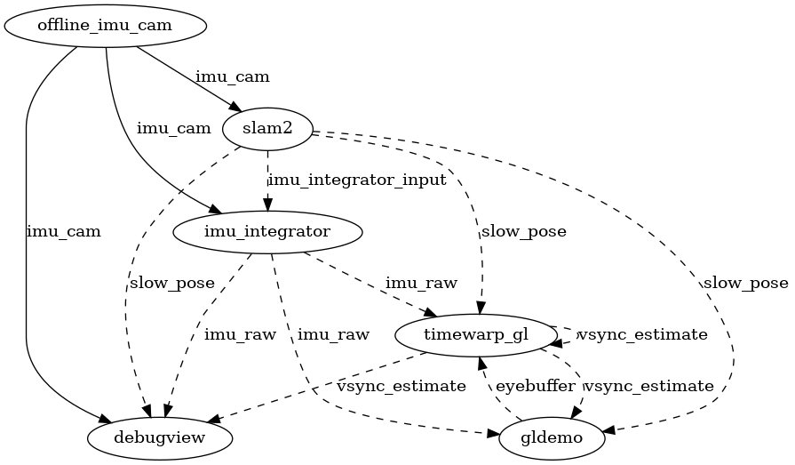

ILLIXR plugins
This page details the structure of ILLIXR's plugins and how they interact with each other.
Default Plugins
-
offline_imu_cam: Reads IMU data and images from files on disk, emulating a real sensor on the headset (feeds the application input measurements with timing similar to an actual IMU).Topic details:
- Publishes
imu_cam_typeonimu_camtopic.
- Publishes
-
ground_truth_slam: Reads the ground truth from the same dataset as theoffline_imu_camplugin. Ground truth data can be compared against the measurements fromoffline_imu_camfor accuracy. Timing information is taken from theoffline_imu_cammeasurements/data.Topic details:
- Publishes
pose_typeontrue_posetopic. - Asynchronously reads
imu_cam_typeonimu_camtopic.
- Publishes
-
kimera_vio: Runs Kimera-VIO (upstream) on the input, and outputs the headset's pose. In practice, the Kimera-VIO plugin publishes a fairly slow pose, so IMU integration and pose prediction is required to infer a fast pose.Topic details:
- Publishes
pose_typeonslow_posetopic. - Publishes
imu_integrator_inputonimu_integrator_inputtopic. - Synchronously reads/subscribes to
imu_cam_typeonimu_camtopic.
- Publishes
-
gtsam_integrator: Integrates over all IMU samples since the last published SLAM pose to provide a fast pose every time a new IMU sample arrives using the GTSAM library (upstream).Topic details:
- Publishes
imu_raw_typeonimu_rawtopic. - Synchronously reads/subscribes to
imu_cam_typeonimu_camtopic. - Asynchronously reads
imu_integrator_inputonimu_integrator_inputtopic.
- Publishes
-
pose_prediction: Uses the latest IMU value to predict a pose for a future point in time. Implements thepose_predictionservice (defined incommon), so poses can be served directly to other plugins.Topic details:
- Asynchronously reads
pose_typeonslow_posetopic, but it is only used as a fallback. - Asynchronously reads
imu_rawonimu_rawtopic. - Asynchronously reads
pose_typeontrue_posetopic, but it is only used if the client asks for the true pose. - Asynchronously reads
time_typeonvsync_estimatetopic. This tellspose_predictwhat time to estimate for.
- Asynchronously reads
-
gldemo: Renders a static scene (into left and right eye buffers) given the pose frompose_prediction.Topic details:
- Calls
pose_prediction. - Publishes
rendered_frameoneyebuffertopic. - Asynchronously reads
time_typeonvsync_estimatetopic.
- Calls
-
timewarp_gl: Asynchronous reprojection of the eye buffers. The timewarp ends just after vsync, so it can deduce when the next vsync will be.Topic details:
- Calls
pose_prediction. - Asynchronously reads
rendered_frameoneyebuffertopic. - Publishes
time_typeonvsync_estimatetopic. - Publishes
hologram_inputonhologram_intopic. - Publishes
texture_poseontexture_posetopic ifILLIXR_OFFLOAD_ENABLEis set in the env.
- Calls
-
debugview: Renders incoming frames from the graphics pipeline for debugging live executions of the application.Topic details:
- Calls
pose_prediction. - Asynchronously reads
fast_poseonimu_rawtopic. (IMU biases are unused). - Asynchronously reads
slow_poseonslow_posetopic. - Synchronously reads
imu_camonimu_camtopic.
- Calls
-
audio_pipeline: Launches a thread for binaural recording and one for binaural playback. Audio output is not yet routed to the system's speakers or microphone, but the plugin's compute workload is still representative of a real system. By default this plugin is enabled (seenativeconfiguration).Topic details:
- Calls
pose_prediction.
- Calls
Below this point, we will use Switchboard terminology. Read the API documentation on Switchboard for more information.

-
In the above figure, rectangles are plugins.
-
Solid arrows from plugins to topics represent publishing.
-
Solid arrows from topics to plugins represent synchronous reading. Some action is taken for every event which gets published on the topic.
-
Dashed arrows from topics to plugins represent asynchronous reading. Plugin readers only need the latest event on their topic.
-
Imagine the topic as a trough filling with events from its publisher. Synchronous readers (AKA subscribers) drain the trough, while asynchronous readers just skim fresh events off the top of the trough.
See Writing Your Plugin to extend ILLIXR.
Other Supported Plugins
ILLIXR supports additional plugins to replace some of the default plugins.
-
hologram: Adapts the eyebuffer for use on a holographic display. By default, this plugin is disabled, since an NVIDIA GPU is currently required.Topic details:
- Asynchronously reads
hologram_inputonhologram_intopic. Hologram is too slow to run for every input, so the plugin implements an asynchronous reader which can drop inputs.
- Asynchronously reads
-
open_vins: An alternate SLAM (upstream) implementation that uses a MSCKF (Multi-State Constrained Kalman Filter) to determine poses via camera/IMU.Topic details:
- Same interface as
Kimera-VIO.
- Same interface as
-
rk4_integrator: Integrates over all IMU samples since the last published SLAM pose to provide a fast pose every time a new IMU sample arrives using RK4 integration.Topic details:
- Same interface as
gtsam_integrator.
- Same interface as
-
pose_lookup: Implements thepose_predictservice, but uses ground truth from the dataset. The plugin peeks "into the future" to determine what the exact pose will be at a certain time.Topic details:
- Asynchronously reads
time_typeonvsync_estimatetopic. This tellspose_lookupwhat time to lookup.
- Asynchronously reads
-
offload_data: Writes frames and poses output from the asynchronous reprojection plugin to disk for analysis.Topic details:
- Synchronously reads
texture_poseontexture_posetopic.
- Synchronously reads
-
zed: Reads images and IMU measurements from the ZED Mini. Unlikeoffline_imu_cam,zedadditionally has RGB and depth data. Note that this plugin implements two threads: one for the camera, and one for the IMU.Topic details:
- Publishes
imu_cam_typeonimu_camtopic. - Publishes
rgb_depth_typeonrgb_depthtopic.
- Publishes
-
realsense: Reads images and IMU measurements from the Intel Realsense.Topic details:
- Same interface as
zed.
- Same interface as
See Building ILLIXR for more information on adding plugins to a config file.